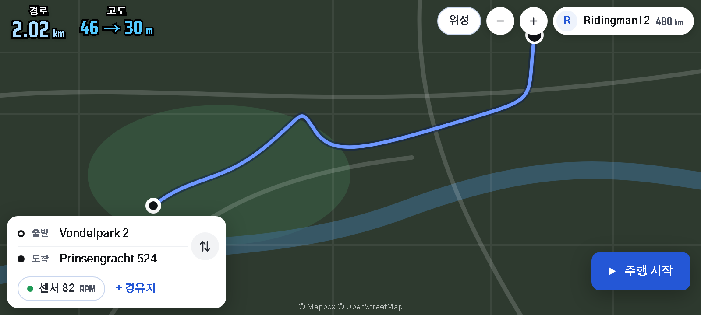
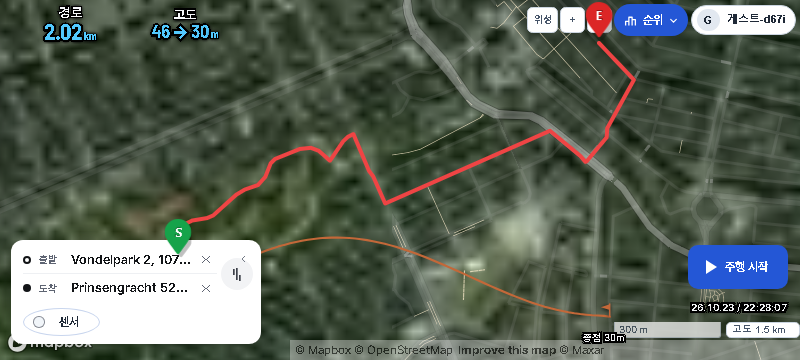
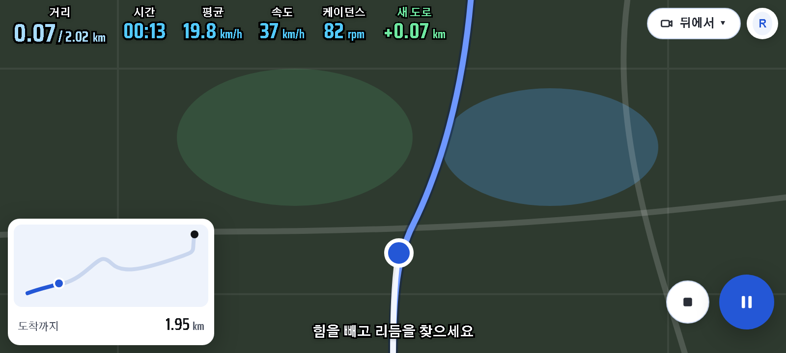
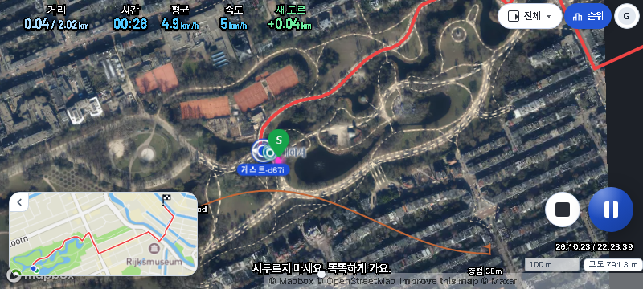
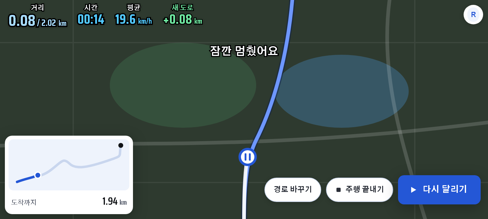
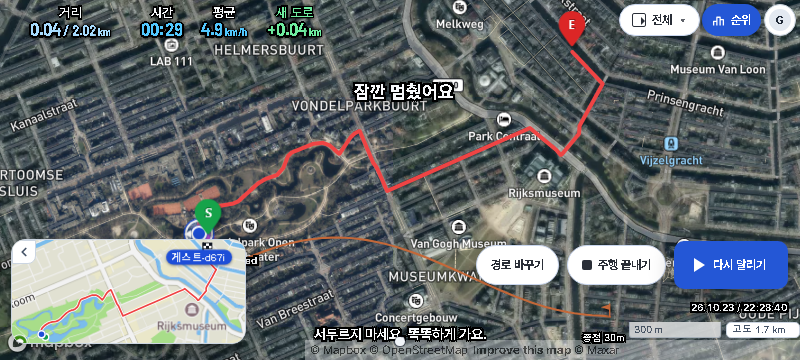

지도 대기 · 주행 · 일시정지
승인 시안과 실제 제품 화면, 800×360 폰 가로 기준. 지도·위치·수치는 실행 데이터에 따라 달라집니다.
지도 대기
승인 시안 04
실제 App
주행 중
승인 시안 08
실제 App
일시정지
승인 시안 09
실제 App
적용: 대기 경로 거리·출발/도착 고도, 흰 경로 카드, 파란 시작 버튼, 카메라 메뉴 하나, 56px 일시정지·44px 흰 종료, 일시정지 직접 조작 3개, 한국어 코칭 표시.
의도된 차이: 기존 미니맵 엔진·지도·TTS 정책은 유지합니다. 센서 설정은 접은 카드 및 주행 중에도 접근할 수 있습니다. 실제 센서가 없으면 케이던스 숫자를 만들지 않습니다. 고도 로딩·실패는 상태로 표시합니다. 경유지 추가는 기존 지도 팝업을 이용합니다.
묶음1 비교 · 정상 앱·로그인 · 대기 프리뷰